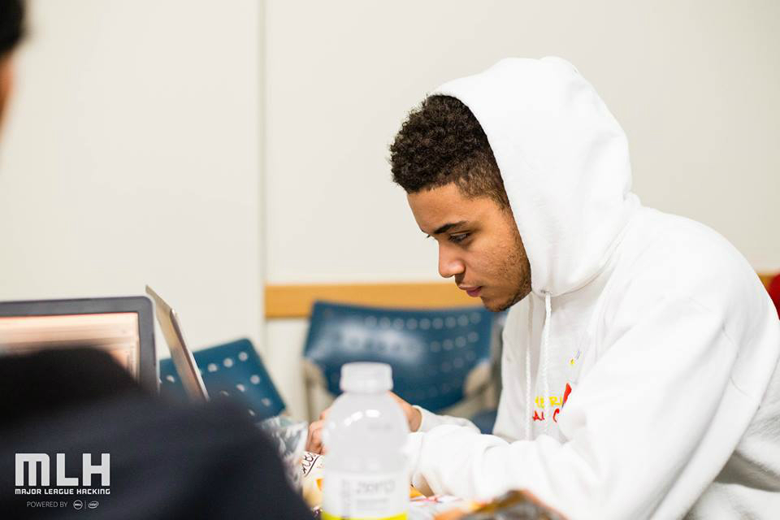

My name is Justin Martinelli and I'm pursuing a B.S. in Computer Science at the University Of Massachusetts Amherst. Since helping people with their computer issues as a young child, to building and programming robots in high school, my passion for technology has only grown stronger.
I want to create code that will elevate a company and I use Java as my main tool. Seeing my hard work manifest into reality is one of the things that makes me content in life. I love to have meaningful interactions with others and collaborate on ideas. I’m driven and have a passion for learning. Front end development is what most interests me. I have a thirst for learning and only seek to quench this thirst. I am looking to accumulate more skills and improve my already acquired ones by constantly working on new projects.
